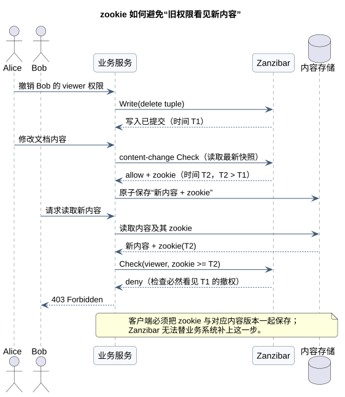
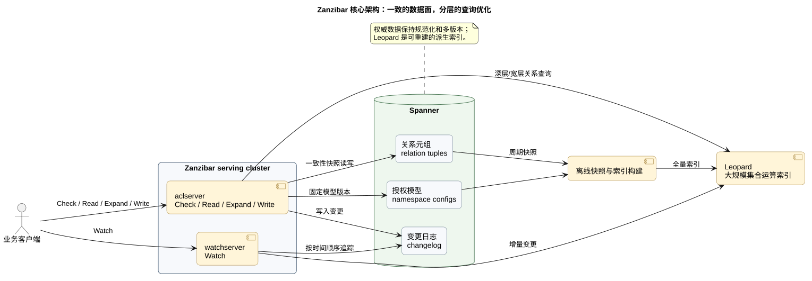

Zanzibar 精读：Google 如何在十毫秒内回答“你能看这份文档吗”
Posted on 一 20 7月 2026 in Tech
| Abstract | Zanzibar 精读：Google 如何在十毫秒内回答“你能看这份文档吗” |
|---|---|
| Authors | Walter Fan |
| Category | Distributed Systems / Security |
| Status | v1.0 |
| Updated | 2026-07-20 |
| License | CC-BY-NC-ND 4.0 |
Zanzibar 精读：Google 如何在十毫秒内回答“你能看这份文档吗”
权限系统平时没什么存在感。用户点开一份文档，系统在背后问一句：“他能看吗？”回答 yes，页面打开；回答 no，返回 403。看起来不过是一条 if。
麻烦从“撤权”开始。Alice 刚把 Bob 移出项目组，又往共享文件夹放了一份新文档。如果某个机房还拿着旧的成员名单，Bob 就可能看见本不该看见的新内容。权限系统偶尔慢一点，用户会抱怨；偶尔答错一次，安全团队就要加班。这个岗位颇像守门员：扑出一百个球没人记得，漏一个球全场都看见。
Google 在 2019 年公开的论文 Zanzibar: Google's Consistent, Global Authorization System 讲的正是这道难题。它支持 Calendar、Cloud、Drive、Maps、Photos、YouTube 等服务；论文报告的生产规模超过 2 万亿条访问控制关系、每秒 1000 多万次客户端查询，同时把常见授权检查的 P95 延迟压在约 10 毫秒。
但我读完后觉得，数字只是肌肉，真正值得学的是骨架：
Zanzibar 的核心不是 ReBAC，也不只是一套 ACL 数据库，而是一份跨越业务数据与授权数据的一致性契约。
本文不再重复“RBAC 和 ReBAC 有什么不同”，那部分可以先看《从 RBAC 到 OpenFGA》。这里专门回答五个更难的问题：
- 权限为什么能用很少的关系元组表达？
- 撤权之后，怎样保证旧权限看不到新内容？
- 一次
Check为什么会变成分布式图遍历？ - 面对深层群组、热点和长尾延迟，系统怎么扛？
- 没有 Spanner 和一万台服务器，我们还能抄走什么？
阅读路线
| 你想知道什么 | 建议阅读 |
|---|---|
| 先抓住论文主线 | 第一、二、三节 |
| 关心分布式一致性 | 第四节 |
| 关心性能与架构 | 第五、六节 |
| 准备设计自己的授权系统 | 第七、八、九节 |
| 想检查是否真正读懂 | 最后的自测题 |
一、先把论文压缩成一句话
Zanzibar 要做的事可以写成一个布尔问题：
Check(user U, relation R, object O, minimum snapshot Z) -> allow / deny
例如：
Check(user:alice, viewer, document:readme, zookie:abc) -> true
这句调用背后有五个互相拉扯的目标：
| 目标 | 为什么难 |
|---|---|
| 正确性 | 撤权、授权、内容修改有先后顺序，不能拿旧规则判断新内容 |
| 灵活性 | 要表达用户、群组、嵌套群组、资源继承以及关系组合 |
| 低延迟 | 授权位于每次请求的关键路径，搜索结果还可能触发上百次检查 |
| 高可用 | 授权服务不回答，业务通常只能拒绝访问 |
| 大规模 | 任意地区都可能检查任意对象，简单按地域分片并不好使 |
一般系统做到其中两三项已经可以开庆功会。Zanzibar 难在五项都要，而且不能用“缓存旧结果，差不多就行”来糊弄正确性。
论文的答案可以拆成四层：
- 用关系元组统一表达 ACL、群组和资源层级；
- 用集合运算规则描述权限如何继承和组合；
- 用 Spanner 快照 + zookie 守住因果顺序；
- 用缓存、请求合并、Leopard 索引、隔离与 hedging 把正确答案算得足够快。
二、数据模型：把“谁能做什么”写成关系
Zanzibar 的基本记录叫 relation tuple，中文可以叫“关系元组”。论文使用这个形式：
<namespace>:<object-id>#<relation>@<user-or-userset>
看四个例子就够了：
doc:readme#owner@10
group:eng#member@11
doc:readme#viewer@group:eng#member
doc:readme#parent@folder:A#...
翻译成人话：
| 元组 | 含义 |
|---|---|
doc:readme#owner@10 |
用户 10 是 readme 的 owner |
group:eng#member@11 |
用户 11 是 eng 组的成员 |
doc:readme#viewer@group:eng#member |
eng 组的成员都是 readme 的 viewer |
doc:readme#parent@folder:A#... |
readme 的父对象是文件夹 A |
这里最有力量的不是 user → object，而是右边也可以放一个 userset，也就是“由另一组关系定义出来的一群人”。于是群组不再是特殊数据结构，它只是一个有 member 关系的对象；嵌套群组也不特殊，不过是 userset 再引用 userset。
这一步统一了三类看起来不同的东西：
直接授权：user ──viewer──> document
群组授权：user ──member──> group ──viewer──> document
层级继承：user ──viewer──> folder ──parent──> document
关系元组只记录事实。至于“owner 是否天然也是 editor”“文档是否继承父文件夹 viewer”，由 namespace configuration，也就是授权模型来定义。
用集合代数写业务规则
论文里的配置语言提供三个关键叶子操作：
this：读取当前关系直接存储的用户或 userset；computed_userset：引用同一对象的另一个关系；tuple_to_userset：先沿某条对象关系走一步，再计算目标对象上的某个 userset。
这些结果还能做 union、intersection 和 exclusion，也就是并集、交集和排除。假设规则是：
editor = direct_editor ∪ owner
viewer = direct_viewer ∪ editor ∪ parent_folder.viewer
那么 owner 自动是 editor，editor 自动是 viewer，父文件夹的 viewer 也能看文档。业务上修改“继承规则”时，只改模型，不必给每一份文档补写一堆重复元组。
这正是声明式授权的价值：事实归事实，推导规则归规则。 如果两者混在一张表里，规则改一次，可能要回填十亿行数据。
一个容易忽略的边界
Zanzibar 的关系模型很适合回答“某人与某对象有什么关系”。它不是论文意义上的通用 ABAC 引擎。像“工作日 9 点到 18 点且金额低于一万元”这种依赖请求上下文的属性规则，不是这篇论文的重点。
所以不要看到 Zanzibar 很强，就把所有授权问题都画成关系图。关系稳定、需要继承和遍历的部分适合 ReBAC；时间、金额、地域、风险分更像 ABAC。现实系统经常是组合拳，不是一招鲜。
三、五个 API：写事实、问结果、追变化
论文给出的主要 API 很克制：
| API | 回答什么 | 需要注意什么 |
|---|---|---|
Read |
存了哪些原始关系元组 | 不执行 rewrite，owner 不会自动出现在 viewer 结果里 |
Write |
添加或删除关系元组 | 支持用“lock tuple”做乐观并发控制 |
Watch |
某个时间点之后发生了哪些变更 | 按提交时间顺序返回，并用 heartbeat zookie 续读 |
Check |
用户是否属于某个有效 userset | 执行完整规则推导，返回 allow/deny |
Expand |
一个关系最终由哪些用户和集合组成 | 返回 union/intersection/exclusion 构成的 userset tree |
Read 与 Expand 的差别非常重要。Read 看的是“数据库里写了什么”，Expand 看的是“按照模型推导后意味着什么”。很多自研授权系统只有一张关系表和一个查询接口，后来做审计时才发现：能查原始数据，却解释不了为什么某人最终有权。
Watch 也不只是“方便同步”。搜索系统要先筛出用户有权看到的结果，不能对全库每条结果临时做一次 Check。它需要消费权限变更，维护自己的授权感知索引。Zanzibar 通过 changelog 和 Watch 把这个能力做成了平台接口。
写入竞争怎么处理
客户端若要批量修改某个对象的 ACL，会先读出该对象的元组和一条普通的“lock tuple”，再提交变更并触碰这条锁元组。只有锁元组自读取后没有变化，写入才成功；否则重新读取再试。
这不是数据库悲观锁，而是乐观并发控制。它的用意很朴素：两个人同时编辑共享名单时，不能让后提交的人悄悄覆盖先提交的人。
四、整篇论文最值钱的一节：zookie 与“新敌人”问题
如果只记住 Zanzibar 的一个概念，我建议记 new enemy problem，论文可直译为“新敌人问题”。这个名字有点像谍战片，问题其实很生活化：一个刚刚被撤权的人，不能继续看见之后产生的新内容。
论文举了两种情况。
情况 A：没有尊重两次 ACL 更新的顺序
1. Alice 把 Bob 移出文件夹 ACL
2. Alice 让 Charlie 把新文档移进这个文件夹
3. 文档继承文件夹 ACL
如果系统先看见第 2 步、后看见第 1 步，Bob 就可能看见新文档。
情况 B：拿旧 ACL 判断新内容
1. Alice 撤销 Bob 对文档的访问权
2. Charlie 给文档加入新内容
3. Bob 请求读取新内容
即使两次 ACL 更新内部有序，只要第 3 步拿的是第 1 步之前的 ACL 快照，Bob 仍可能看到新内容。
因此 Zanzibar 需要两个保证：
- External consistency：有因果关系的更新，其提交时间戳也保持相同顺序；
- Snapshot read with bounded staleness：检查所使用的快照，不能早于客户端指定的下界。
Spanner 的 TrueTime 给 ACL 写入分配具有全局意义的提交时间戳。可是 Zanzibar 并不要求每次检查都读“全球最新数据”，那会把跨地域同步塞进每次请求，延迟和可用性都吃不消。
它引入了一个故意不透明的 token：zookie。

流程如下：
- 用户准备修改内容时，业务服务发起一次
content-change Check； - Zanzibar 在最新快照上完成检查，返回携带该快照时间的 zookie；
- 业务服务把“新内容 + zookie”原子地存入自己的内容数据库；
- 以后读取该版本内容时，把 zookie 带给 Zanzibar；
- Zanzibar 可以选任意快照来检查，但不能早于 zookie 表示的时间。
这里的关键语义是 at least as fresh，至少这么新，而不是“必须正好等于这个版本”。这给了系统很大的优化空间：本地副本如果已经更新得更远，直接用更近的快照即可；没有必要退回到一个精确的微秒时间点。
为什么 token 必须不透明
论文没有把时间戳直接暴露给客户端，而是给一个 opaque cookie。这样做有两个好处：
- 客户端不能随手拼一个时间戳，要求系统读某个任意历史版本；
- 服务端将来可以改变编码、加入版本或其他元数据，不破坏 API。
这是很值得抄的小设计：把协议承诺暴露出去，把内部实现藏起来。
zookie 不是魔法，客户端也有责任
Zanzibar 只能保证“我不会用早于 Z 的权限快照”。它不能保证业务服务一定把正确的 Z 与正确的内容版本绑在一起。
如果客户端忘了保存 zookie，或者内容和 zookie 分两次写、只成功了一半，一致性链条还是会断。换句话说，这不是授权服务单方面的强一致，而是授权系统与业务存储共同完成的一份协议。
安全保证跨过了系统边界，就必须写成客户端可执行、可测试的协议。只在架构图上画一条箭头不算完成。
五、一次 Check，为什么会变成分布式图遍历
最简单的检查只需查一条元组：
doc:readme#viewer@user:alice ?
但如果 readme 分享给 group:eng#member，eng 又包含子组，文档还继承父文件夹权限，那么 Check 会沿着 userset 引用递归展开。论文把它转换成布尔表达式：
直接命中用户
OR 命中某个间接 userset，并且用户属于该 userset
OR 按 rewrite 规则从其他关系推导成功
表达式树的叶子会并发执行；某个分支已经决定父节点结果时，其他分支可以取消。例如并集只要一个分支为真就能短路，交集只要一个分支为假就能短路。
这听上去像普通并行搜索，但放在分布式系统里有三笔账：
- 一个请求会 fan out 到多个 aclserver；
- 每个分支可能继续递归并访问 Spanner；
- 搜索页一次展示几十个结果，又会同时发起几十次
Check。
平均路径很短没有用。只要一个深层群组或一个慢分片拖住整棵表达式树，用户看到的就是慢页面。这也是为什么论文反复谈 P95、P99 和 P99.9，而不满足于平均延迟。
配置本身也要一致
关系数据一致还不够。如果参与同一次检查的两个服务器加载了不同版本的 namespace config，它们对同一组元组也可能算出不同答案。
因此每次请求不仅固定关系数据的快照，也固定配置快照。集群会选一个所有参与服务器都已具备的配置时间点。这个细节很容易在自研系统里漏掉：大家给“策略数据”做了版本，却让“策略模型”热更新到一半就参与计算。
六、性能工程：真正难的是热点，不是图遍历算法
论文直接说，热点处理是追求低延迟和高可用过程中最关键的前线。这个判断很有生产味，不像只在白板上画过图的人说的话。

架构上可以分成四块：
- aclserver：处理
Check、Read、Expand、Write，并把递归工作分发给其他服务器； - Spanner：保存多版本关系元组、namespace config 和 changelog，是权威数据源；
- watchserver：追踪 changelog，向客户端和索引系统持续输出变更；
- Leopard：针对巨大、很深或很宽的集合，做专门的集合索引和运算。
1. 保持权威数据规范化
Zanzibar 原则上把关系元组规范化存储，避免为了读性能复制大量推导结果。这样更新一致性更容易守住，代价是热门群组可能把同一批数据库行读到冒烟。
它没有一上来全面反规范化，而是在查询层逐步加优化：
- 缓存最终
Check结果； - 缓存递归中的中间结果；
- 用 consistent hashing 把相同 key 路由到相同服务器；
- 调用方和被调用方都缓存，形成 cache tree；
- 热 key 再用额外机制分散到多个服务器。
这里的设计取向很清楚：正确、简单的数据源放在底下，复杂但可重建的加速结构放在上面。
2. 缓存 key 必须带快照
授权缓存最危险的问题不是 miss，而是“命中了错误时代的答案”。Zanzibar 把快照时间编码进 cache key，不复用另一个快照算出来的结果。
可是时间戳精确到微秒，每次请求一个时间，缓存几乎永远命不中。它于是把检查时间向上取整到一秒或十秒等较粗的粒度，同时仍满足 zookie 的新鲜度下界。大量请求因此落到少数几个公共快照上，可以共享缓存。
这是一处非常漂亮的折中：
微秒级提交时间负责表达正确顺序
粗粒度评估时间负责制造缓存复用
zookie 下界负责确保二者不越过安全边界
“向上取整”意味着选更晚的快照，不会比客户端要求的更旧。如果取整后的时间还在 TrueTime 意义上的未来，读取会等待时间走过去。
3. 用 lock table 合并在途请求
热点刚出现、缓存尚未填充时，几千个相同请求可能一起冲向数据库，这就是 cache stampede，缓存击穿。
Zanzibar 为每个缓存 key 维护 lock table。同一 key 同时只让一个请求真正计算，其他请求等待其结果。这种模式今天常叫 singleflight 或 request coalescing。
论文还提到一个很细的改进：通常父表达式已经得出结果后，子检查应尽快取消以节省资源；但若 lock table 上已有其他请求等着这个子结果，贸然取消反而让等待者重新计算。因此，有 waiter 时会延迟取消。
优化不是“越早取消越好”，而是要看整个共享请求的上下文。
4. 热点对象要换读取策略
直接成员检查通常只查一条元组。但如果某个热门对象突然收到大量“不同用户是否可见”的检查，每次查一条仍会打到同一个存储分片。
Zanzibar 动态识别这类对象，改为一次读出并缓存该对象某个关系的全部元组。它用更多单次读带宽，换后续更高的缓存命中率。
这提醒我们：最优查询计划不是写死的，它取决于对象热度和访问分布。
5. Leopard：把递归可达性改成集合相交
普通 pointer chasing 适合大多数关系，但遇到极深或拥有大量子组的群组时，递归会失控。Leopard 针对选定 namespace 构建派生索引。
它把群组关系整理成两类集合：
MEMBER2GROUP(user) -> 该用户直接加入的群组
GROUP2GROUP(group) -> 该群组的直接或间接后代群组
判断用户 U 是否属于群组 G，可以转成：
MEMBER2GROUP(U) ∩ GROUP2GROUP(G) != empty
也就是说，把在线递归图遍历的一部分成本，提前转成有序整数集合的交集运算。
Leopard 的全量索引来自周期快照，天然会旧；所以它还有一个增量层，通过 Watch 接收快照之后的变化。查询某个时间点时，把不晚于查询时间的增量变更叠加到离线索引上。这是经典的“base snapshot + delta”结构。
它不是免费午餐。一条 Zanzibar 元组变化，可能展开成数万条 Leopard 索引事件。读变快了，写放大和索引维护复杂度就上来了。论文没有回避这笔账。
6. Hedging 只用在成本相近的后端调用
为了降低长尾延迟，Zanzibar 会对 Spanner 和 Leopard 发 hedged request：第一个请求慢到一定程度后，再向另一个副本发相同请求，谁先回来用谁。
但它不对 aclserver 之间的完整授权检查做 hedging。原因是不同 Check 的成本差异很大，最慢的往往正是最贵的；复制一份最贵任务，可能把系统压得更慢。
所以 hedging 的前提不是“请求重要”，而是“重复请求的成本可控且相近”。这条边界比“多发一份就能降低 P99”重要得多。
7. 多租户系统必须隔离坏邻居
Zanzibar 按客户端限制 CPU 使用、在途 RPC 数量和数据库并发读；对单个 (object, client) 也有限制。不同客户端还使用不同的 lock key，避免一个客户端被后端限流时拖住其他客户端。
缓存解决重复工作，配额解决无边界工作。只有前者，没有后者，遇到异常流量还是会级联故障。
七、论文数据该怎么读，而不是只抄摘要
论文中的生产数据主要来自 2018 年 12 月的一周样本，以及截至论文撰写时的多年运行记录。它们说明系统在当时的 Google 内部环境中达到了什么，不是今天部署任意 Zanzibar-like 产品的性能承诺。
| 指标 | 论文报告值 | 我们应该怎样理解 |
|---|---|---|
| 关系元组 | 超过 2 万亿条，接近 100 TB | 元组编码紧凑，读远多于写 |
| 客户端查询 | 超过 1000 万 QPS | 包含 Check、Read、Expand、Write，不等于全是授权检查 |
| 部署规模 | 超过 1 万台服务器，30 多个位置完整复制 | 这是 Google 内部基础设施，不是起步配置 |
| Safe Check P50 / P95 / P99 | 3.0 / 9.46 / 15.0 ms | Safe 指 zookie 较旧、通常可从本地区域读取 |
| Recent Check P95 / P99 | 60.0 / 76.3 ms | 新鲜数据常需要跨区域读取，代价明显 |
| Write P50 / P95 / P99 | 127 / 233 / 401 ms | 全球协调让写入远慢于读取 |
| 可用性 | 3 年高于 99.999% | 按论文定义的 qualified RPC，经采样回放 prober 测量 |
这里有三个阅读要点。
第一，一致性有价格。Recent Check 的 P95 是 Safe Check 的数倍，写入更慢。论文厉害之处不是消灭这个价格，而是让绝大多数请求不必支付它。
第二，读写比决定架构。论文样本中读类请求比写请求高两个数量级，所以把写做慢一点、换取大量低延迟读，是合理的业务选择。换成高频动态策略系统，结论未必一样。
第三，可用性数字要连定义一起读。论文排除了格式错误、deadline 太短、超过配额等不合格请求，并通过回放采样请求的 prober 测量。这种方法有道理，因为真实客户端会主动取消请求；但它与“所有线上调用中成功返回的比例”不是同一个指标。
八、我认为 Zanzibar 最强的三点与三个边界
最强的三点
第一，先定义用户可感知的错误，再设计一致性。
论文没有从“我们有 Spanner”讲起，而是从“撤权用户不应看到新内容”讲起。new enemy problem 把抽象的一致性等级落到了隐私后果上。工程师因此知道自己究竟在保护什么。
第二，把灵活性放在模型里，把性能复杂度关在平台里。
业务用元组和集合规则表达权限，不必自己实现递归、缓存、快照、热点和跨地域复制。统一平台的收益，不只是少写几段鉴权代码，而是让难题只解决一次。
第三，优化始终服从一致性语义。
缓存 key 带快照、时间量化只能向更新方向取整、Leopard 用增量层补齐离线快照、配置与关系数据都固定版本。每个优化后面都能找到“不答错”的护栏。
三个边界
第一，它高度依赖 Google 的基础设施条件。
Spanner、TrueTime、全球副本和内部调度系统不是普通团队随手可得。开源实现可以提供 revision token、CockroachDB 或其他一致性方案，但不能因为 API 长得像，就默认拥有论文同等级别的保证。
第二，跨系统一致性仍依赖客户端纪律。
zookie 必须和内容版本正确绑定。客户端漏传、错传，或在业务数据库里没有原子保存，论文的保证就到不了用户。这部分需要 SDK、契约测试和故障注入来守，不能只靠文档提醒。
第三，论文主要解决关系型授权，不等于完整的授权治理。
审批流、break-glass、属性条件、策略变更评审、权限申请与定期盘点等组织问题，不会因为装了 Zanzibar-like 引擎自动消失。技术负责算得快、算得一致；谁有权定义关系，仍是治理问题。
九、普通团队真正应该抄的十件事
我们大概率不需要复制 Google 的规模，但可以复制它的思考顺序。
1. 先写出安全不变量
不要先写“P99 小于 20ms”，先写：
用户被撤权后，不得读取撤权之后产生的内容版本。
一次授权检查必须使用同一个关系快照和同一个模型版本。
无法证明 allow 时默认 deny。
2. 区分事实、模型和决策
- 事实：
document:42#viewer@group:eng#member - 模型：viewer 包含 editor，并继承 parent.viewer
- 决策：Alice 当前是否能看 document:42
三者分别版本化，审计时才说得清。
3. 给读取提供 revision token
不一定叫 zookie，也不必暴露数据库时间戳。至少要支持：
Write -> revision
Check(min_revision=revision)
这样“写后读”和“内容版本之后读”才有明确协议。
4. 高风险操作优先保证新鲜度
查看公共页面可以接受短暂旧数据；撤权、删除、转账、修改分享范围不应走同一套宽松缓存。把一致性需求按风险分级，不要让所有请求都付最高成本，也不要让所有请求都拿旧答案。
5. 缓存必须认识版本
缓存 key 至少包含：
tenant + object + relation + subject + model_version + snapshot/revision
只用 user:resource:action 做 key，撤权后很容易继续命中旧 allow。
6. 为相同在途查询做 singleflight
缓存过期的一瞬间，热点请求不要一起打穿数据库。合并相同查询，给等待者复用同一个结果；同时设置超时和最大 waiter 数，避免等待队列本身失控。
7. 限制图的复杂度
必须考虑循环、最大深度、最大节点数、最大 fan-out、超时和取消传播。模型能表达，不代表线上应该允许无限表达。
8. 把派生索引当作可重建数据
搜索索引、反向权限索引和展开后的群组闭包都可能损坏或落后。保留权威关系日志、快照位置和重建流程；否则“优化层”迟早反客为主，变成第二份说不清的真相。
9. 同时测延迟、新鲜度和正确性
仪表盘至少应有：
Check的 P50、P95、P99 与超时率；- 按模型、租户、关系深度拆分的 fan-out 和数据库读取量；
- 本地读与跨区域读比例；
- revision lag、Watch lag、索引 lag；
- allow/deny 比例与旧新系统影子决策差异；
- singleflight 合并率、缓存命中率和热点 key。
10. 把故障策略提前写死
授权服务不可用时，高风险操作通常 fail closed；低风险只读场景是否允许使用最后一次已知结果，要由业务风险决定。不要等故障发生后，在群里临时投票。
更完整的授权中心分层和演进路线，可以接着看《如何为你的服务创建统一的授权中心》。
十、用六道题检查自己是否真正读懂
读论文最怕“每个字都认识，合上就只剩 Zanzibar 很牛”。下面六题如果能用自己的话回答，主干就抓住了。
- 关系元组为什么允许右侧是 userset，而不只允许 user？ 这如何统一群组、嵌套群组和间接 ACL？
Read和Expand有什么区别？ 为什么审计工具可能两个都需要？- 为什么每次都读最新 ACL 不是最佳方案？ 它会牺牲什么？
- zookie 保证了什么，又没有保证什么？ 客户端必须承担哪一步？
- 为什么缓存 key 要带快照时间，又为什么要把评估时间量化？ 两者分别保护什么？
- 为什么 Leopard 仍需要增量层？ 只用周期离线快照会破坏哪项承诺？
我的简答版是：
userset 让权限成为可组合的关系图；
Read 看事实，Expand 看推导；
永远最新会把全球协调塞进热路径；
zookie 约束最旧快照，客户端负责绑定内容版本；
快照入 key 防止旧答案串用，时间量化提高复用；
Leopard 增量层把离线索引补到查询所需的时间点。
最后一句
Zanzibar 给我的最大启发，不是“权限可以画成图”，而是：正确性、性能和可用性并不是三选一，但你必须把最贵的一致性只用在真正需要它的因果链上。
关系元组让模型简单，zookie 把用户意图穿过系统边界，Spanner 给出有序快照，缓存与 Leopard 再把正确答案加速。每一层只解决一类问题，又给下一层留下清楚的契约。这种克制，比“2 万亿条 ACL”更值得学。
如果明天要评审一个授权系统，我会先问的也不是“用 OpenFGA 还是自研”，而是这三句：
- 用户撤权后，我们到底承诺多快生效？
- 业务内容与权限版本之间，靠什么建立可证明的顺序？
- 所有缓存、索引和降级路径，是否仍然守住前两句？
这三句答不清，组件清单写得再长，也只是把门锁装得很漂亮，却没确认钥匙会不会串门。
参考资料
- Zanzibar: Google's Consistent, Global Authorization System (USENIX ATC 2019)
- Spanner: Google's Globally-Distributed Database
- 从 RBAC 到 OpenFGA：细粒度授权的架构、落地与取舍
- 授权的领域模型：从 RBAC、ABAC 到 Keycloak、Vault 的一张全景图
- 如何为你的服务创建统一的授权中心
安全复核卡
- [ ] 所有未匹配或求值失败的请求默认拒绝
- [ ] 撤权与内容更新的顺序有 revision/zookie 一类协议保护
- [ ] 关系数据和授权模型在一次检查中使用固定版本
- [ ] 缓存不会跨租户、模型版本或快照复用 allow 结果
- [ ] 图遍历有深度、宽度、超时、循环和资源配额限制
- [ ] 授权日志记录决策依据和版本，但不记录 token、密钥及不必要的个人数据
- [ ] 搜索索引和派生权限索引可追踪 lag，并可从权威日志重建
- [ ] 故障时的 fail-closed、缓存降级和 break-glass 边界已经过评审与演练
本作品采用知识共享署名-非商业性使用-禁止演绎 4.0 国际许可协议进行许可。欢迎在我的个人网站 https://www.fanyamin.com 访问原文并评论。